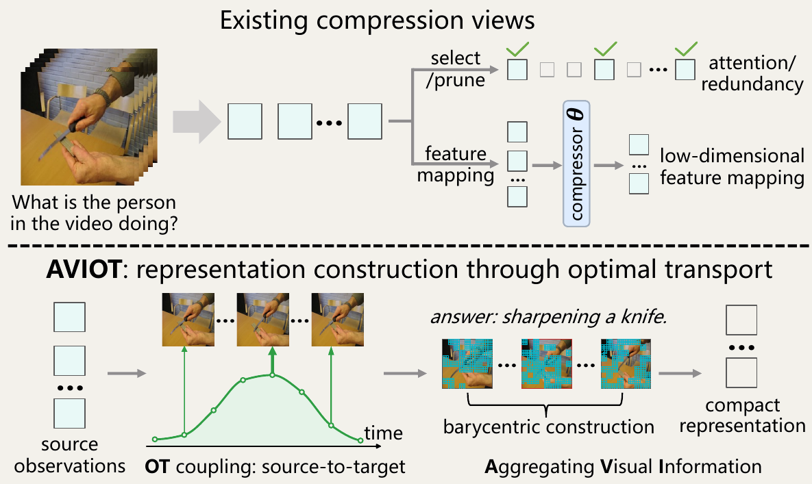
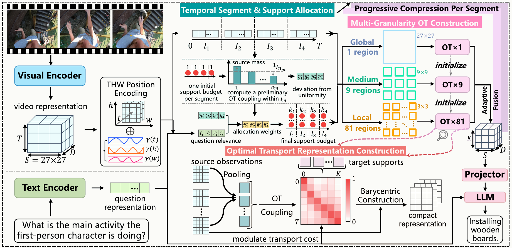
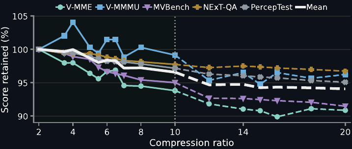
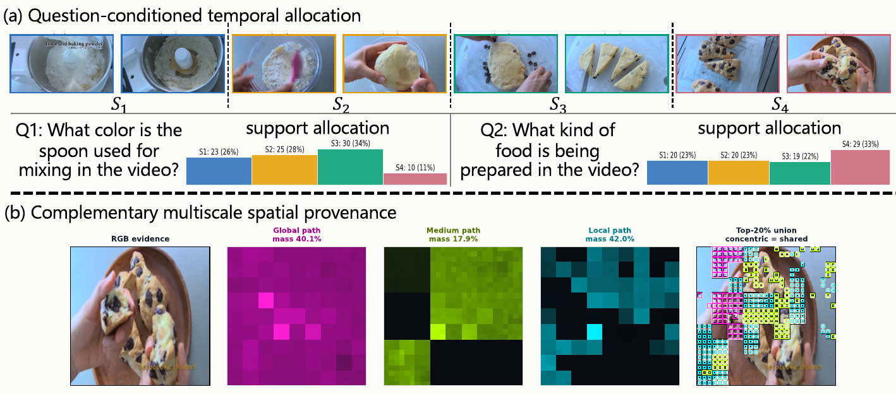
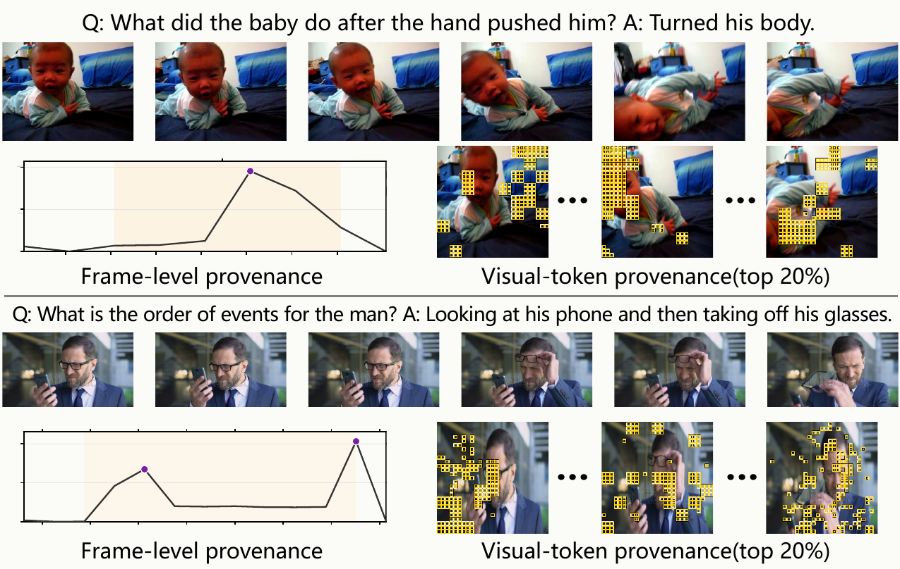

Construct, don’t merely select
The OT coupling constructs compact supports from the dense source distribution instead of merely choosing which observations survive.
VideoLM token compression
AVIOT constructs compact video representations by transporting dense frame observations onto a prescribed set of supports—conditioned by the question and resolved across spatial granularities.
Overview film
01 · Reframing compression
Selection keeps a subset; learned bottlenecks map features into outputs. AVIOT instead asks how a compact target measure should represent dense observations as a whole.

The OT coupling constructs compact supports from the dense source distribution instead of merely choosing which observations survive.
The question controls temporal capacity and transport cost, while spatial granularity determines where correspondence is estimated.
Across benchmarks and ratios, AVIOT preserves competitive video understanding while substantially reducing visual-token context.
02 · Method
AVIOT allocates support capacity over time, then estimates question-conditioned correspondence at complementary spatial resolutions. Aligned representations are adaptively fused before multimodal projection and LLM decoding.

Encoded frame grids form source observations. Temporal segments share a total budget of K target supports.
The question changes transport cost and directs support capacity toward relevant moments.
Global, medium, and local plans construct aligned spatial features; adaptive fusion combines evidence across scales.
After multimodal projection, compact visual supports join the question to condition LLM decoding.
03 · Results
Results separate two settings: ten benchmarks across open-source 7B VideoLMs, and five benchmarks isolating compression on LLaVA-Video-7B with 64 frames.
10 benchmarks
Full score matrix5 benchmarks
Ten-benchmark evaluation
AVIOT is evaluated at r = 4 across ten datasets spanning short, long, egocentric, temporal, and knowledge-intensive video understanding.
| Model | Video-MME | Video-MMMU | ActivityNet-QA | NExT-QA | Perception Test | TempCompass | LongVideoBench | LVBench | EgoSchema | MVBench |
|---|---|---|---|---|---|---|---|---|---|---|
| LongVA | 52.6 | 23.9 | 50.0 | 68.3 | — | 56.9 | — | — | — | — |
| IXC-2.5 | 55.8 | — | 52.8 | 71.0 | 34.4 | 67.1 | — | — | — | 69.1 |
| LLaVA-OV | 58.2 | 33.9 | 56.6 | 79.4 | 57.1 | 64.8 | 56.4 | 38.1 | 60.1 | 56.7 |
| Apollo | 61.3 | — | — | — | 67.3 | 64.9 | 58.5 | — | — | — |
| Oryx | 58.3 | — | — | 81.9 | 68.6 | — | 55.3 | — | — | 63.9 |
| LLaVA-Video | 63.3 | 36.1 | 64.1 | 83.2 | 67.9 | 66.6 | 58.2 | 44.2 | 57.3 | 58.6 |
| CoPE | 61.9 | 38.2 | 64.8 | 82.1 | 70.3 | 68.9 | 56.9 | 46.4 | — | 61.9 |
| AVIOT · r = 4 | 63.89 | 39.78 | 68.23 | 83.49 | 71.45 | 68.35 | 56.99 | 45.38 | 58.14 | 61.58 |
IXC-2.5 is InternLM-XComposer-2.5; dashes indicate unreported results. AVIOT uses LLaVA-Video-178K, a smaller training set than most models compared here.
Unseen compression ratios
AVIOT is trained with ratios from 2 to 10, while its target cardinality remains adjustable at inference. Across five benchmarks, the mean moves from 64.38 at r = 2 to 62.27 at r = 10 and 60.74 at the unseen r = 20.
Doubling compression beyond the largest training ratio reduces the mean by 1.53 points, without additional optimization.

| Model / ratio | Token retention | ActivityNet-QA | Perception Test | MVBench | Video-MME | EgoSchema | Mean |
|---|---|---|---|---|---|---|---|
| LLaVA-Video-7B · uncompressed | 100.0% | 64.10 | 67.90 | 58.60 | 63.30 | 57.30 | 62.24 |
| AVIOT · r = 2 | 50.0% | 68.22 | 71.50 | 62.20 | 63.22 | 57.86 | 64.60 |
| AVIOT · r = 4 | 25.0% | 67.06 | 70.72 | 61.33 | 60.85 | 56.33 | 63.26 |
| AVIOT · r = 10 | 10.9% | 65.67 | 69.41 | 58.65 | 58.26 | 53.61 | 61.12 |
Video-MME is reported without subtitles. ActivityNet-QA uses GPT-4o as a semantic judge. This controlled table isolates compression on the same backbone; the ten-benchmark table above reports broader published comparisons.
04 · Evidence
AVIOT’s coupling exposes where support capacity goes, which spatial branch contributes, and which source frames and tokens construct each support.
Question-conditioned allocation
Asking about the spoon allocates 88.6% of supports to the first three segments. Asking about the prepared food moves 33.0% to the final, food-revealing segment—while the total budget stays fixed.

Hierarchical provenance
The figure traces a final target support to its contributing source frames and spatial positions. Curves report frame-level provenance, while token maps show the unaveraged spatial contributions for each source frame.
Baby turning. The curve peaks as the body turn begins, while high-provenance positions follow the face, torso, and moving body as the event unfolds.
Phone, then glasses. One support peaks when the man looks at his phone and again when he removes his glasses. The token maps localize both contributions, showing how the support integrates disjoint temporal windows to resolve event order.

05 · Citation
If you find AVIOT useful in your research, please cite our paper.
@misc{yin2026aggregatingvisualinformationoptimal,
title = {Aggregating Visual Information with Optimal
Transport for VideoLM Token Compression},
author = {Wenti Yin and Xiaotian Han and Junyuan Shang
and Yuchen Ding and Shuohuan Wang and Dianhai Yu
and Changxin Gao and Nong Sang},
year = {2026},
eprint = {2608.20473},
archivePrefix = {arXiv},
primaryClass = {cs.CV},
url = {https://arxiv.org/abs/2608.20473}
}